Screenshots
The playlist view
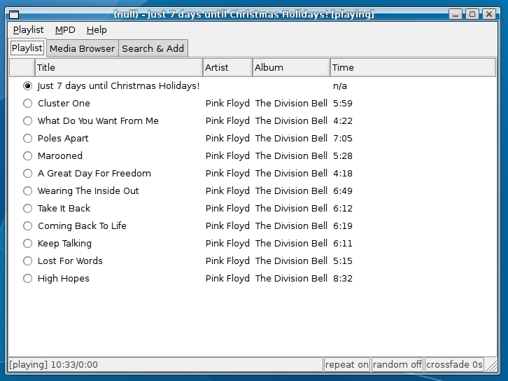
The media browser view
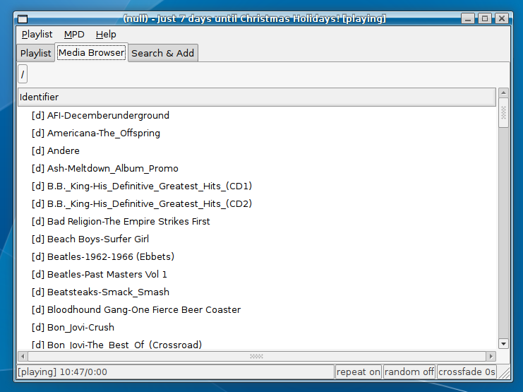
The Search&Add view: before searching
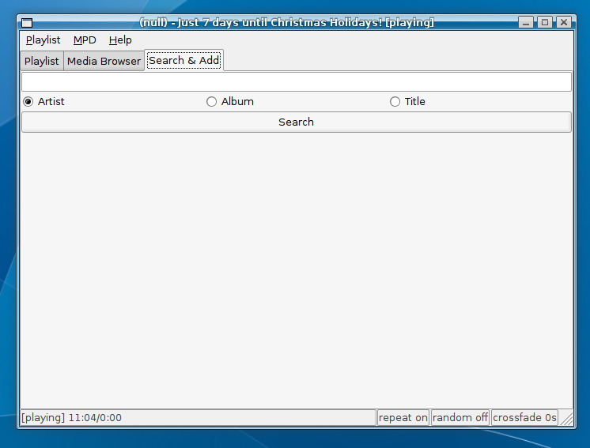
The Search&Add view: after searching
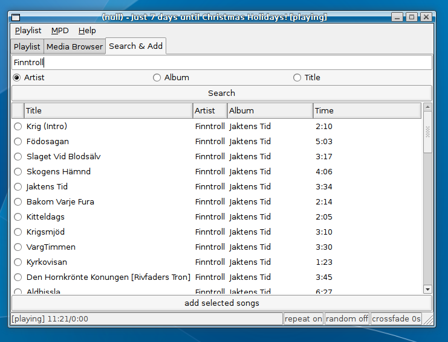
The properties dialog
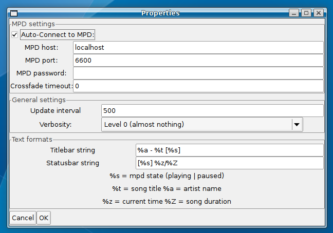
The GNOME applet: applet, applet text activated, left-click menu: control MPD, right-click menu: settings (from left to right)
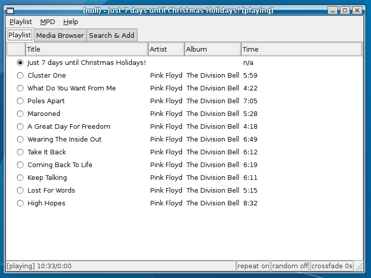
The media browser view
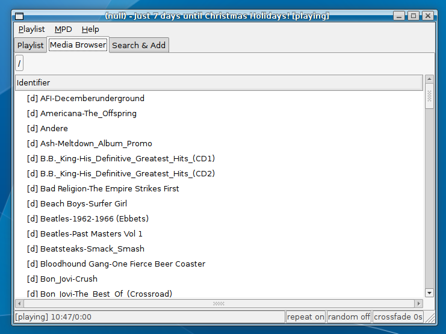
The Search&Add view: before searching
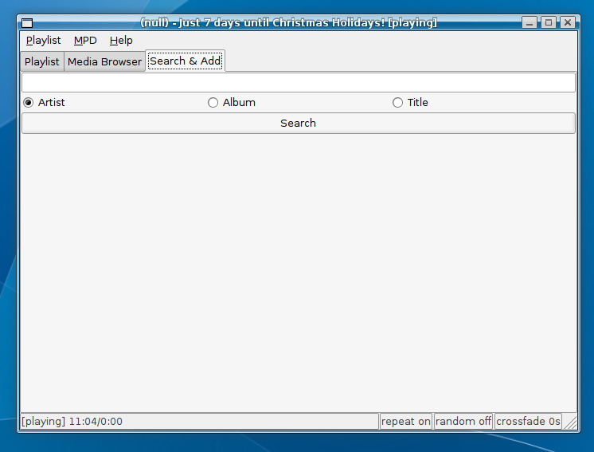
The Search&Add view: after searching
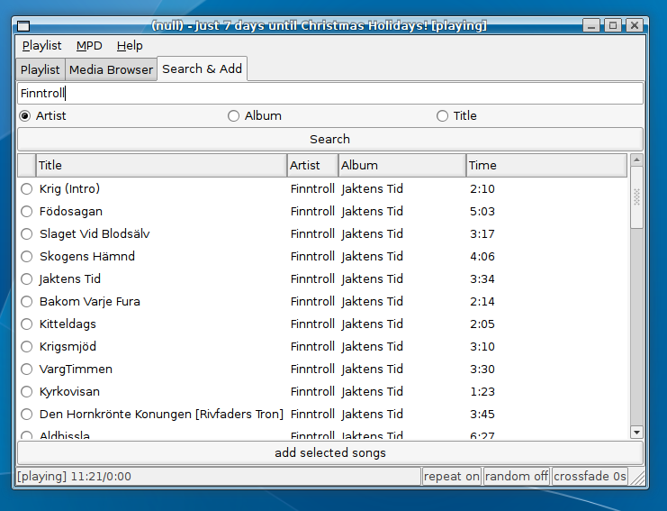
The properties dialog
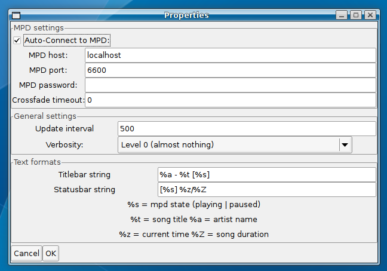
The GNOME applet: applet, applet text activated, left-click menu: control MPD, right-click menu: settings (from left to right)
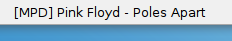
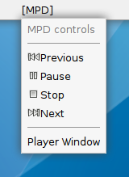
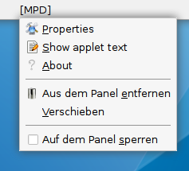